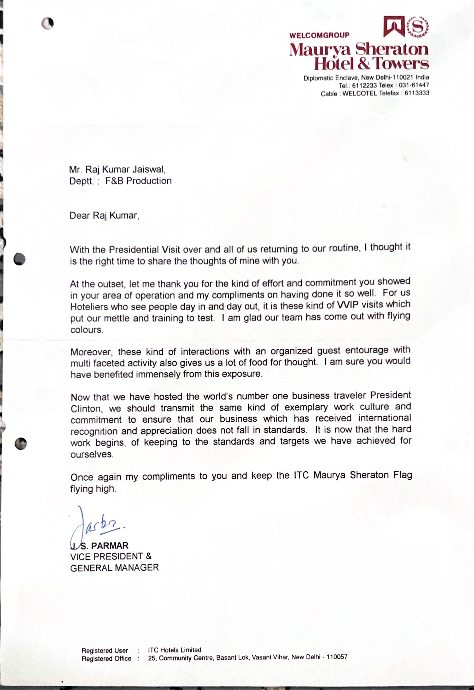

Throughout my extensive culinary career, I have had the privilege of opening multiple restaurants from scratch, overseeing all aspects from setting up the kitchen to designing the menu. One notable accomplishment was the successful launch and operation of the Black Horse Pub in Hounslow. As Executive Chef, I was in charge of every detail, from kitchen setup to menu creation, and I played a pivotal role in sourcing top culinary talent. Under my leadership, the Black Horse Pub quickly became the premier pub in the Hounslow airport area. Our signature dishes, including fish and chips, chicken tikka, and kebabs, became instant favorites among our patrons. My strategic cost-cutting measures ensured that the pub remained sustainable and profitable. Managing a restaurant with an 80 to 100 cover capacity, especially during peak hours and major events like football matches, required exceptional organizational and management skills. I successfully coordinated the kitchen and front-of-house staff, ensuring seamless operations and an outstanding dining experience for our guests. My ability to lead and inspire a team under pressure was instrumental in achieving our goals.
Awards Achivement Awards
In Russia, I held the position of Senior Tandoor Chef, specializing in tandoori cuisine while gaining knowledge about local Russian cuisine. Understanding that Russians favored smoky flavors, I creatively incorporated smoky elements into our dishes. This innovation led to the introduction of smoky grilled harailly fish, which became a hit among our patrons. As a result, our other menu items gained popularity, and the restaurant garnered attention from magazines, becoming one of the few Indian restaurants consistently busy from weekdays to weekends. My recent role as Executive Sous Chef at Mirage al Bahr Resort and Hotel Fujairah further showcased my expertise in the culinary world. At this prestigious 7-star property, I oversaw the entire culinary department, successfully opening three restaurants and two cafes within the hotel premises. Additionally, I managed VIP parties and catering events, both within and outside the hotel, ensuring a memorable dining experience for guests from around the world. One of the key aspects of my success in these roles has been my ability to adapt and innovate. Whether introducing new flavors to traditional dishes or streamlining kitchen operations for maximum efficiency, I have consistently demonstrated a commitment to excellence. My culinary creations are not just about taste but also about presentation and overall dining experience, ensuring that every dish is a visual and sensory delight.
Why you should hire Raj ?
Furthermore, my strong organizational and management skills have been crucial in maintaining the efficiency and profitability of the establishments I have worked for. I have successfully managed budgets, controlled food costs, and ensured compliance with health and safety regulations. My comprehensive knowledge of kitchen operations, coupled with my ability to inspire and lead a team, positions me as a strong candidate for executive culinary roles. In summary, my professional journey in the culinary world has been marked by a dedication to excellence, creativity in menu development, and strong leadership capabilities. From opening multiple restaurants from scratch to managing high-volume operations, I have consistently delivered outstanding results. My international experiences, including my time in Russia and the United Kingdom, have enriched my culinary perspective and allowed me to incorporate diverse influences into my cooking. As I look forward to new opportunities, I am eager to bring my unique blend of skills and experiences to create exceptional dining experiences and drive culinary success. My extensive background, coupled with my passion for food and innovation, positions me as a valuable asset to any culinary establishment.
Achivement Achivement Awards
- 
Getting an compliment from vice president for my services.